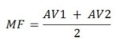

I. EMENTA (72 horas aulas - 4 aulas semanais - Oferecimento II Sem.) Introdução à mecanização agrícola. Mecânica aplicada. Motores de combustão interna. Tratores agrícolas. Tipos de tração mecânica. Estudo orgânico e operacional de máquinas e implementos agrícolas. Tecnologia de aplicação de defensivos agrícolas. Seleção, uso e manutenção da maquinaria agrícola. Planejamento e custos em sistemas mecanizados. Projeto de mecanização agrícola. II. AVALIAÇÃO DA DISCIPLINA Descrição | Data | Peso | | Nota 1ª prova |
17/12/2012 | 1 | | Nota 2ª prova |
08/04/2013 | 1 | | MF - Média final | - | - |
Obs: SUB:
15/04/2013
 IV. SITES RECOMENDADOS
 http://www.deere.com.br
http://www.deere.com.br
http://www.valtra.com.br
http://www.massey.com.br
http://www.jacto.com.br
http://www.anfavea.com.br
http://www.newholland.com.br/
http://www.cultivar.inf.br/maquinas/
http://www.baldan.com.br
http://www.civemasa.com.br
http://www.metasa.com.br
http://www.jornalcana.com.br
http://www.montana.ind.br
http://www.semeato.com.br | |
III. BIBLIOGRAFIA RECOMENDADA 1. BALASTREIRE, L.A. Máquinas agrícolas. São Paulo, Ed. Manole, 1987. 310p. 2. FARRET, F.A. Aproveitamento de pequenas fontes de energia elétrica. Santa Maria: Ed. da UFSM, 1999. 245p. 3. GRIFFIN, G.A. Combine harvesting: Operating maintaining and improving efficiency of combines. Fourth Edition. Fundamentals of Machine Operation. John Deere & Company/Malone. Illinois, 1991. 207p. 4. MIALHE, L.G. Máquinas motoras na agricultura. São Paulo, Ed. da USP,1980. Vol. 1 e 2. 5. MORAES, M.L.B. & REIS, A.V. Máquina para colheita e processamento dos grãos. Pelotas, Ed. UFPel, 1999. 150p. 6. MACHADO, A.L.T. & REIS, A.V. Máquinas para o preparo do solo, semeadura, adubação e tratamentos culturais. Pelotas, Ed. UFPel, 1996. 280p. 7. REIS, A.V.; MACHADO, A.L.T. & TILMANN, C.A. Motores, tratores, combustíveis e lubrificantes. Pelotas, Ed. UFPel, 1999. 315p. 8. ORTIZ-CAÑAVATE, J. & HERNANZ, J.L. Tecnia de la mecanizacion agraria. Madrid, Editora Madrid-Prensa, 1989. 641p. 9. RIDER, A.R.; BARR, S.D. & PAULI, A.W. Hay and forage harvesting. Fourth Edition. Fundamentals of Machine Operation. John Deere & Company/Moline, lllinois, 1993. 261p. 10. SILVEIRA, G.M. Máquinas para a pecuária. São Paulo, ed. Nobel, 1997. 167p. 11. SRIVASTAVA, K.A.; GOERING, E.C. & ROHRBACH, P.R. Engineering Principles of agricultural machines. ASAE Textbook Number 6, june, 1993. 576p. |